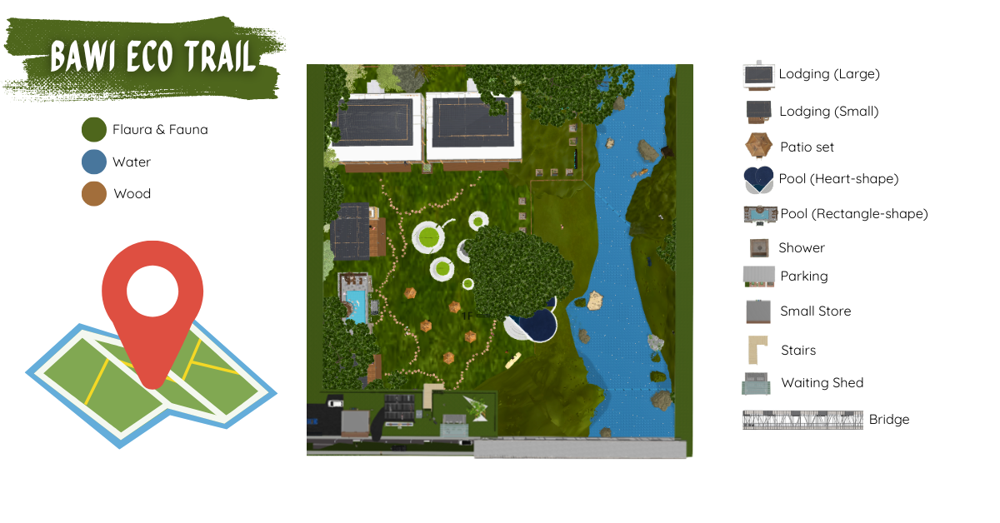

About Bawi Eco Trail
The Bawi Eco Trail is a stunning natural attraction located in Batangas, offering visitors a unique opportunity to explore the rich biodiversity and scenic landscapes of the region. The trail is designed for eco-tourism, promoting environmental awareness and conservation.
Main Attractions
- Shrines
- Clean River
- Romantic Scenery
- Fresh Mountain Water
History and Significance
Surrounded by the beauty of nature lies the Bawi Eco Trail, a place that continues to inspire both locals and visitors alike. It provides a sustainable and smart tourism model for the Bawi Eco Trail that can serve as a benchmark for other rural destinations. The local government, as its results, will provide a basis for crafting policies on environmental protection, zoning, and infrastructure improvement. It can also guide disaster risk reduction and ecological management.
Next are the Local Residents, whose lives are deeply connected to the land and its natural treasures. The local community will benefit as it will identify livelihood opportunities and needed skills development to maximize the economic potential of tourism for the local community. Then come the Tourism Establishments, the stewards of visitor experience and service. This is also significant to the management and operators as it offers a practical framework for improving visitor experience, adopting smart tools, upgrading facilities, and professionalizing the workforce.
Featured Attractions

Heart-Shaped Pool – A lovely heart-inspired pool that captures the essence of love and relaxation, perfect for couples, families, and fun photo moments.

Rectangle-Shaped pool – Take a dip in the refreshing natural spring water that keeps you cool and energized while enjoying the scenic surroundings.

Mama Mary Statue – A serene spot for prayer and reflection, offering peace and comfort in the heart of nature.
Small Eco Park – A cozy green space at the center of the trail, ideal for picnics, rest, and nature appreciation.

Heart-Shaped Swing – A picture-perfect attraction where visitors can relax, take photos, and enjoy the romantic charm of the eco trail.

Riverside Area – A tranquil river flowing along the trail where guests can unwind, listen to the soothing sound of water, and enjoy the natural scenery.
Available Facilities
-
Entrance & Exit A proper entrance and exit, with a bulletin map and a QR for the website.

-
Restrooms Clean and accessible restrooms are available throughout the trail.

-
Shower Area Used to cleanse before using the pools.

-
Lodging Designated resting and eating areas with tables and benches for visitors to enjoy.

-
Parking There is no designated parking, but locals advised that the bridge could be a Parking Area.

-
Small Store Provides essential goods and refreshments to visitors.

-
Patio A relaxing outdoor space for dining, lounging, and enjoying scenic resort views.

-
Overall Map
